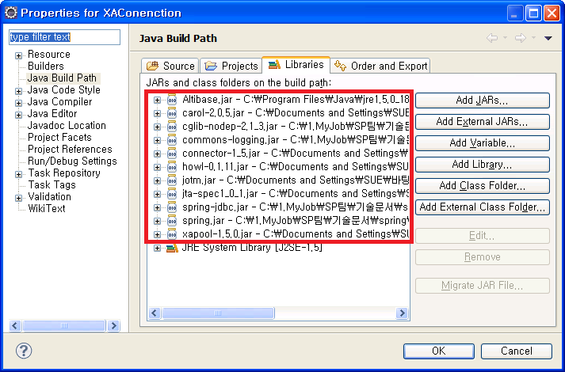

Using the Spring Framework, there are various ways to process transactions. First, specify the transaction manager in the bean configuration file and process the transaction. Transaction processing can be implemented directly in the source as needed, or declaratively in the bean configuration file.
Spring Framework provides implementation classes of PlatformTransactionManager interfaces according to the database integrating technology. These classes can be specified as TransactionManager. For example, the DataSourceTransaction Manager class can be specified as TrnasactionManager to process local transactions, and JtaTransactionManager class as TransactionManager to process the distributed transaction.
In order to declaratively process the transaction after specifying the TransactionManager, define the bean that processes the transaction in the bean configuration file. At this time, specify the TransactionProxyFactoryBean class for this bean to specify how to process the transaction for each method name.
This chapter describes how to set these classes as TransactionManager and how to process transactions declaratively using bean files.
DataSourceTransactionManager Configuration
Among the PlatformTransactionManager implementation class, TransactionManager can be specified by using the DataSourceTransaction Manager class. Simply specify org.springframework.jdbc.datasource.DataSourceTransactionManager class in transactionManager bean in the bean configuration file (applicaitonContext.xml). Then, when processing the transaction declaratively, Specify the transactionManager bean defined for the transaction properties among the properties of the bean that processes the transaction.
Ex) applicationContext.xml file of DataSourceTransactionManager
…
<bean id="transactionManager"
class="org.springframework.jdbc.datasource.DataSourceTransactionManager">
<property name="dataSource" ref="dataSource"/>
</bean>
<bean id="txProxyTemplate" abstract="true"
class="org.springframework.transaction.interceptor.TransactionProxyFactoryBean">
<property name="transactionManager" ref="transactionManager" />
<property name="transactionAttributes">
<props>
<prop key="get*">PROPAGATION_REQUIRED, readOnly </prop>
<prop key="add*">PROPAGATION_REQUIRED</prop>
</props>
</property>
</bean>
<bean id="accountService" parent="txProxyTemplate">
<property name="target">
<bean class="com.altibase.banking.AccountService">
<property name="accountDao" ref="accountDao"/>
</bean>
</property>
</bean>
…
In order to process the transaction, the user needs to know how to manage the transaction (TransactionManager) and how to process the transaction. The above example uses the springframework.transaction.interceptor.TransactionProxyFactoryBean class among the transaction processing methods to configure the bean configuration file (applicationConext.xml) as a method to process transactions declaratively (the details are described below).
Declarative transaction processing using TransacitonProxyFactoryBean
TransactionProxyFactoryBean class is a class that provides various properties to process transactions. The bean of TransactionProxyFactoryBean class can be set in the bean configuration file (applicationContext.xml), and defines the method of handling the transaction each method to process transactions declaratively. Transaction related properties specified in <property> of bean for processing this transaction are as follows.
- target
Sets the object to which the transaction applies with properties - transactionManager
Sets the TransactionManager defined above - transactionAttributes
Sets the properties object used when setting transaction properties. At this time, the transaction property is defined by using the <prop> tag in the unit of the method to which the transaction is applied
The tag value of <prop> is specified in the following format.
PROPAGATION, ISOLATION_NAME, readOnly, timeout, +Exception, -Exception
Description of each item of <prop> tag value is as follows
| Description |
|---|---|
PROPAGATION | Specify transaction propagation rules. Required. |
ISOLATION_NAME | Set ISOLATION property. Optional. ALTIBASE only supports READ_COMMITTED, SERIALIZABLE, and REPETABLE_READ. |
readOnly | Set transaction read-only when readOnly is used. |
timeout | Set the transaction timeout time in seconds |
+,-Exception | Set ROLLBACK rule. +Exception executes COMMIT even if the corresponding Exception occurs, and --Exception performs ROLLBACK when the corresponding Exception occurs. |
The following is a bean configuration file (applicationContext.xml) that defines transaction properties by using the TransactionProxyFactoryBean class.
Ex) applicationContext.xml file of DataSourceTransactionManager
…
<bean id="transactionManager"
class="org.springframework.jdbc.datasource.DataSourceTransactionManager">
<property name="dataSource" ref="dataSource"/>
</bean>
<bean id="txProxyTemplate" abstract="true"
class="org.springframework.transaction.interceptor.TransactionProxyFactoryBean">
<property name="transactionManager" ref="transactionManager" />
<property name="transactionAttributes">
<props>
<prop key="get*">PROPAGATION_REQUIRED, readOnly </prop>
<prop key="add*">PROPAGATION_REQUIRED</prop>
</props>
</property>
</bean>
<bean id="accountService" parent="txProxyTemplate">
<property name="target">
<bean class="com.altibase.banking.AccountService">
<property name="accountDao" ref="accountDao"/>
</bean>
</property>
</bean>
…
Distributed Transaction Process
In the Spring, the JOTM (Javan Open Transaction Manager) can be used to process distributed transactions. At this time, in order to integrate with JOTM, JotmFactoryBean provided by Spring must be registered first. In addition, as TransactionManager, JtaTransaction Manager which provides distributed transactions can be used.
In addition, to process distributed transactions, DataSource that provides distributed transactions must be used. org.enhydra.jdbc.pool.StandardXAPoolDataSource provided by JOTM can be used, but this document, it describes how to process distributed transactions by using the ALTIBASE.jdbc.driver.
The following is an example of processing distributed transactions by using org.springframework.transaction.jta.JtaTransactionManager and Altibase.jdbc.driver.AltibaseXaDataSource.
- Specify DataSource by using the AltibaseXADataSource
- Specify JotmFactoryBean
- Specify JtaTransactionmanager as TransactionManager
- Specify the bean that processes the declarative transaction by using the TransactionProxyFactoryBean class.
Ex) applicationContext.xml file of XAConnection
…
<bean id="dataSource1" class="Altibase.jdbc.driver.AltibaseXADataSource">
<!-- connection url-->
<property name="url" value="jdbc:Altibase://192.168.1.35:21129/mydb"/>
<!-- DB user account setting -->
<property name="user" value="sys"/>
<!-- DB user password setting -->
<property name="password" value="manager" />
</bean>
<bean id="dataSource2" class="Altibase.jdbc.driver. AltibaseXADataSource ">
<!-- connection url-->
<property name="url" value="jdbc:Altibase://127.0.0.1:20300/mydb"/>
<!-- DB user account setting -->
<property name="user" value="sys"/>
<!-- DB user password setting -->
<property name="password" value="manager" />
</bean>
<bean id="accountDao1" class="com.altibase.banking.AccountDao">
<property name="dataSource" ref="dataSource1"/>
</bean>
<bean id="accountDao2" class="com.altibase.banking.AccountDao">
<property name="dataSource" ref="dataSource2"/>
</bean>
<bean id="jotm" class="org.springframework.transaction.jta.JotmFactoryBean"/>
<bean id="transactionManager"
class="org.springframework.transaction.jta.JtaTransactionManager">
<property name="userTransaction" ref="jotm"/>
</bean>
<bean id="txProxyTemplate" abstract="true" class="org.springframework.transaction.interceptor.TransactionProxyFactoryBean">
<property name="transactionManager" ref="transactionManager" />
<property name="transactionAttributes">
<props>
<prop key="get*">PROPAGATION_REQUIRED, readOnly</prop>
<prop key="add*">PROPAGATION_REQUIRED</prop>
</props>
</property>
</bean>
<bean id="accountService" parent="txProxyTemplate">
<property name="target">
<bean class="com.altibase.banking.AccountService">
<property name="accountDao1" ref="accountDao1"/>
<property name="accountDao2" ref="accountDao2"/>
</bean>
</property>
</bean>
…
In order to run the XAConnection project included in the example, jar files for JOTM must be added in addition to the jar files previously added.

The files related to JOTM can be downloaded from http://forge.ow2.org/projects/jotm/.
After downloading and extracting, there are jar files. Among them, carol-2.0.5.jar, connector-1_5.jar, howl-0.1.11.jar, jotm.jar, jta-spec1_0_1.jar, and xapool-1.5.0.jar files Just add it to the project. (The name of the jar file above may be different depending on the downloaded version of JOTM.)
Other cglib-nodep-2.1.3.jar files are required separately.
{kind=link}